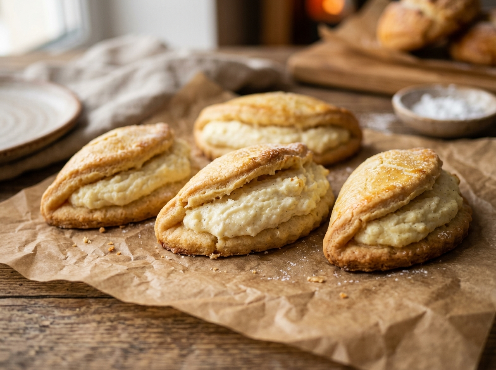

Пластичное творожное тесто на цельнозерновой муке с тающей ванильной начинкой. Легко раскатывается скалкой, не крошится в песок и складывается полумесяцем без трещин. 15 г чистого белка на один сочник!

В миске соедините 360 г творога 5% (2 пачки), 1 целое яйцо С0, щепотку соли и 4–5 саше сахзама. Разомните вилкой в однородную кашицу (яйцо сразу свяжет сухой творог). Всыпьте 150–160 г цельнозерновой муки с 1 ч. л. разрыхлителя. Замесите тесто руками: за 1–2 минуты оно соберется в податливый, эластичный шар, напоминающий мягкий пластилин. Если творог очень сухой — добавьте 1–2 ст. л. молока. Заверните шар в пленку и уберите в холод на 15 минут.
Для начинки соедините 180 г творога (1 пачка), белок второго яйца, 1 ст. л. кукурузного крахмала (15 г), 4–5 саше сахзама и 1 г ванилина (желток оставьте в пиале для смазки). Перетрите вилкой или взбейте блендером 20 секунд до сладкого густого крема.
Припылите стол или коврик щепоткой муки. Раскатайте охлажденное тесто скалкой до толщины 4–5 мм — благодаря клейковине цельнозерновой муки оно катается ровно, не липнет и не крошится в песок. Кружкой или формой вырежьте круги диаметром 9–10 см. На одну половину круга выложите 1 ст. л. с горкой начинки, накройте второй половиной полумесяцем. Тесто согнется легко и без трещин! Края не защипывайте — начинка должна аппетитно выглядывать сбоку.
В пиале взболтайте желток второго яйца с 1 ст. л. молока и кисточкой смажьте верхушки сочников (это обеспечит аппетитный пекарский глянец). Выберите режим:
Переложите сочники на решетку и дайте им постоять 10–15 минут. Горячая творожная начинка стабилизируется, а тесто станет нежным и мягким.
Рисовая мука дает сухой рисовый привкус и распадается в песок. Цельнозерновая пшеничная мука содержит природный глютен: тесто катается скалкой и сгибается без трещин.
Творог сильно приглушает сахарозаменитель: на 3 пачки творога (540 г) нужно не менее 8–10 саше ФитПарада суммарно (по 4–5 в тесто и в начинку), чтобы сочники были сладкими десертными.
Первое яйцо идет целиком в тесто (влага белка склеивает творог). От второго яйца белок идет в начинку для густоты, а желток с молоком — на смазывание верха для глянцевой румяной корочки.
Не прижимайте края сочника вилкой или пальцами. Классический советский сочник славится приоткрытой творожной серединкой с аппетитной каймой.